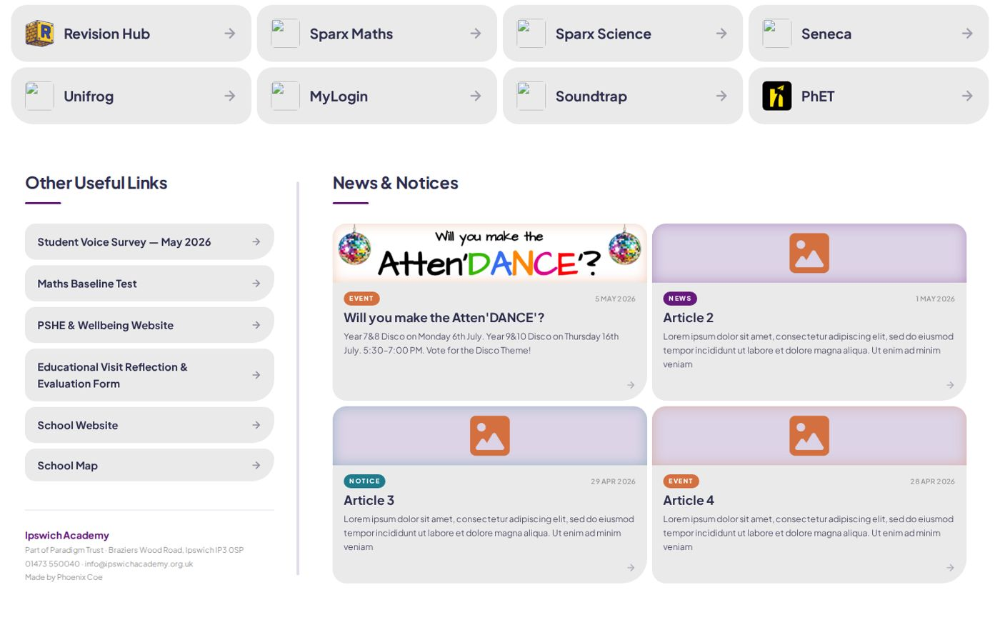
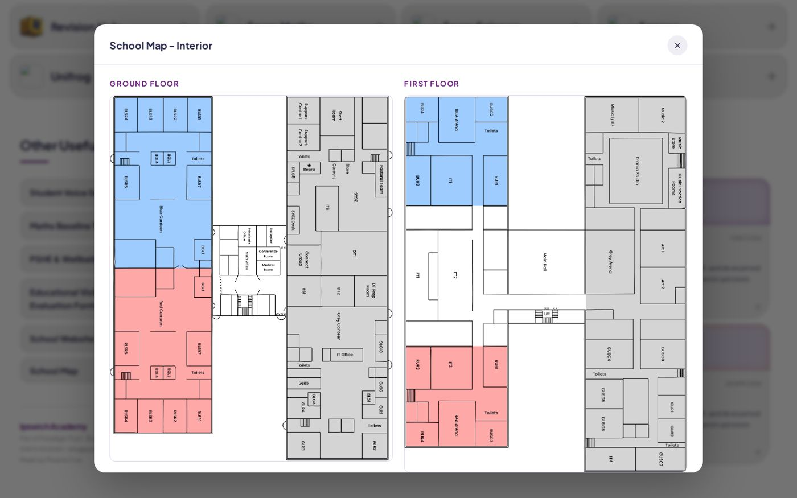
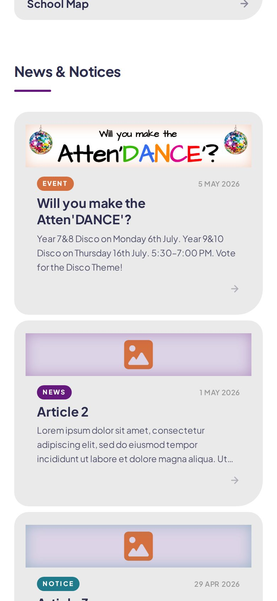

Twelve quick links
Everything students open most, as big buttons with proper icons.
A redesign for Ipswich Academy
My redesign of the school’s student hub.

Students open a lot of different things in a school day: the portal, Google Classroom, email, Sparx, the revision site. I redesigned the hub around those things, so they’re all one tap away on a single page, with room for what you check most: what’s going on in school and where a room is.
Everything students open most, as big buttons with proper icons.
Announcements and posters sit right under the links, so you see them without having to hunt.
A little badge shows the school week. It knows when the holidays are, so it doesn’t get confused.
Both floors, colour-coded, in a pop-up. Handy if you’re new and can’t find a room.


The purple and orange come straight from the IA logo, so it still feels like part of the school.
Students may need to access links outside of school, so on a small screen every link turns into a big, full-width row that’s easy to tap.
It’s one page that loads fast, and it’s easy for someone else to pick up and look after.
On a small screen the quick links stack into big rows, and the news cards follow underneath.
Visit the live site